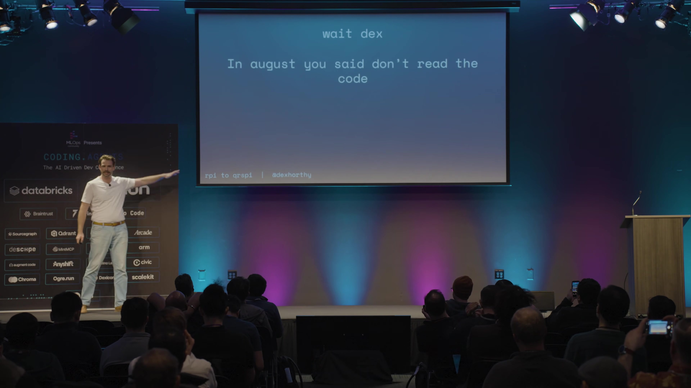
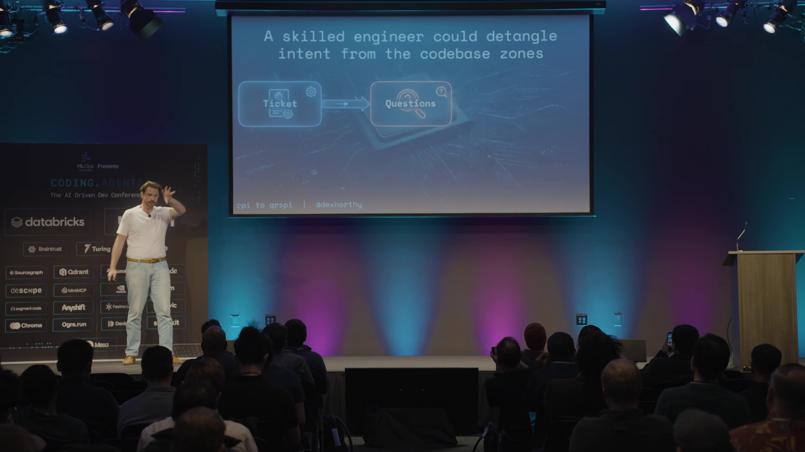
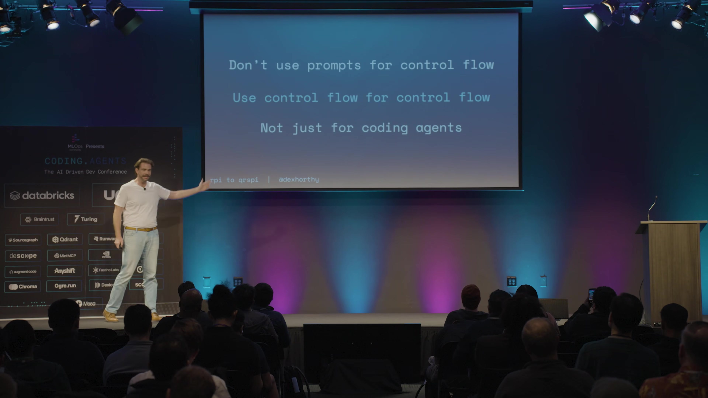
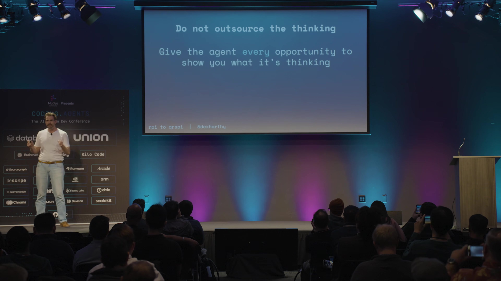
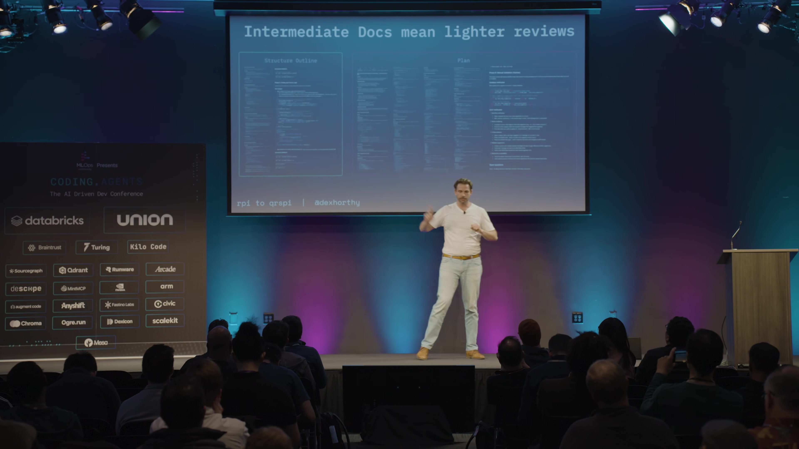
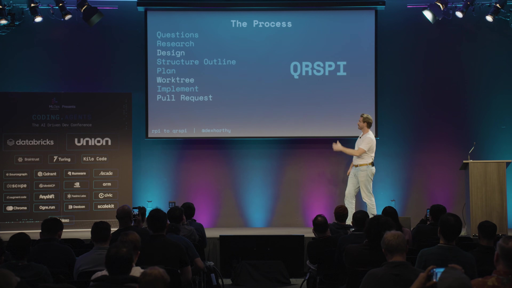

CHAPTER 01为什么同一套 RPI，专家有效、团队失效
Dex 没有否定研究、计划、实现的价值，而是撤回了“会念提示词就能复制专家效果”“看计划便足以替代看代码”的乐观假设。
他的观察是：专家能够把模糊工单拆成研究问题、逼 Agent 提问、在执行前纠正错误；其他人直接运行研究或计划命令，常得到带立场的研究和替用户作完决定的计划。专家的隐性判断没有被工作流表达，工具因此依赖“神奇口令”。这不是用户缺乏训练的借口，而是工具应修复的问题。00:03:05 ↗
| 旧用法 | 失败后果 | 本场修正 |
|---|---|---|
| 把功能目标直接交给研究 Agent | 研究从描述事实变成论证方案 | 先生成问题，再在隔离上下文研究 |
| 一个巨型规划提示词包办全部步骤 | 跳过提问、方案与大纲确认 | 拆成更小、明确控制的阶段 |
| 通读千行计划，不读实际代码 | 实现仍可能偏离，还得重复检查 | 短文档提前纠偏，深入审查实际代码 |
他承认团队试过约半年不读代码，后来不得不拆掉系统的大块实现。开源项目里“没有逐行读每个 PR”的实践，不能直接推到受监管、客户依赖、故障会凌晨叫醒人的生产软件。与此同时，他仍明确尊重这些开源维护者，并没有说其项目没有风险。00:09:10 ↗

CHAPTER 02让研究返回事实，让控制流保持确定
研究阶段需要的是现有系统的真相。目标与实现偏好应经过明确接口进入流程，不能在事实整理时悄悄决定答案。
第一窗口把工单转成问题，第二个全新窗口只收到问题，不知道准备构建什么。比如工单要求新增跨租户端点，问题可以是现有端点怎样组织、相关数据流如何传递、worker 在哪里。研究 Agent 因而去找相关机制，而不是直接替一个已选方案找理由。Dex 把它类比为代码阅读场景的查询规划。00:11:14 ↗

指令数量与上下文长度是两种压力
旧计划提示词至少有 85 条指令，再叠系统提示、CLAUDE.md、工具与 MCP。Dex 引述此前研究，认为当时模型稳定遵循指令的能力有预算，并提到约 150–200 条的量级；他也说研究来自上一年，不能把它当成永恒硬上限。更一般的教训是：即使窗口没满，过多并行约束也会让重要流程被忽略。00:07:41 ↗
修正方式是把问题、研究、设计、结构、详细计划等拆开，每份提示词少于 40 条指令，再用显式程序推进流程。客服例子说明同一原则：先分类投诉、产品反馈、账单问题，再调用小而专注的处理提示，而不是期待一个巨大提示可靠执行所有分支。00:13:05 ↗

“用控制流实现控制流”并不要求把每个判断写死。LLM 仍可承担分类和不确定推理；确定的阶段切换与边界由程序表达，减少反复依赖模型记住并执行同一套规程。
CHAPTER 03把人工审阅放在设计与结构的高杠杆位置
不读千行详细计划，仍然可以认真规划。关键是区分设计方向、实现结构和给 Agent 使用的战术细节。
| 产物 | 回答的问题 | 人工主要检查什么 |
|---|---|---|
| 设计讨论 | 去哪：当前状态与目标是什么 | 参考模式、已定决定、未决问题、错误假设 |
| 结构大纲 | 怎么到：阶段、顺序与验证点 | 跨层切片、接口、类型、可测试性 |
| 详细计划 | Agent 具体怎样实施 | 前面已对齐后抽查，深入审查留给实际代码 |
讲者举的量级是：约 200 行设计讨论，可以在生成 2,000 行代码之前暴露误解；同一功能，详细计划约八页、结构大纲约两页。这是用于说明审阅杠杆的示例量级，不是每个项目的配额。设计讨论还会列出参考模式，允许人指出“那个原子 SQL 更新写法是大家讨厌的遗留实现，别照抄”。00:15:13 ↗

结构大纲像 C 头文件：暴露签名和将改变的类型，足够判断方向，不展开全部实现。它特别用来纠正模型的横向计划习惯：数据库全做完，再服务，再 API，再前端。到了 1,200 行仍不工作时，已经很难定位问题。垂直方式可以先 mock API、接前端，再补服务与数据库，在途中反复检查端到端行为。00:16:41 ↗

敏感或复杂任务需要更密集的检查点，但 Dex 也说明自己并非所有任务每一阶段都测试。需要更细时，继续要求类型、签名和解释；目标是让 Agent 的理解可见，让工程师有机会修正，而不是由文档行数代替判断。00:17:12 ↗
CHAPTER 04团队对齐、代码所有权与仍未解决的问题
最重要的杠杆往往不在“少写几小时代码”，而在更早暴露决定，减少团队审查与返工。
Dex 会主动把短设计讨论发给代码负责人，让坏决定在二百行文档阶段被拦下，而非实现跑通、开发者产生依恋之后才推翻。一个两天的功能，若编码原本只占两到四小时，即使压到二十分钟，团队协调、审查、验证仍可能让总周期维持两天。AI 若也帮助规划对齐，才可能减少后续等待与重做。00:19:56 ↗

讲者把新路线叫 crispy，也在画面中用 QRSPI 表达核心阶段。他坦言，步骤变多后怎样降低采用门槛、衡量团队生产率、共享 Skill 时避免破坏别队流程，都没有在本场给出成熟答案；测试与验证也明确留给另一场演讲。
问答保留了对上下文与自动化的限定
对读代码是否能规模化，他主张探索适当中间点：以接近人类质量争取 2–3 倍，优于快十倍后半年推倒重来。形式化验证、TLA+ 和“软件工厂”是值得探索的方向，但他不认可当下仅凭规格就把生产代码当不可读汇编的做法。00:23:39 ↗
“笨区”也只是入门指导：熟练用户应按任务、指令与事实比例调整，他有时用到 60%，有时压到 30% 以下。对新手才建议尽量低于 40%，到 60% 考虑收尾。关键产物保存在静态文档，下一会话从它们恢复，而非完全依赖自动压缩。00:25:41 ↗
本场的主要证据是讲者与团队的实践观察，不是证明新流程普遍提效的受控实验。2–3 倍是他提出的目标方向；指令数量与窗口比例都是录制时的参考，不应变成机械标准。
原始来源：Everything We Got Wrong About Research-Plan-Implement - Dexter Horthy。
总结与逐字稿分别提供主题理解和原序阅读；原视频截图可点击查看。讲者的经验判断、路线设想与现场演示结果在正文对应位置区分。